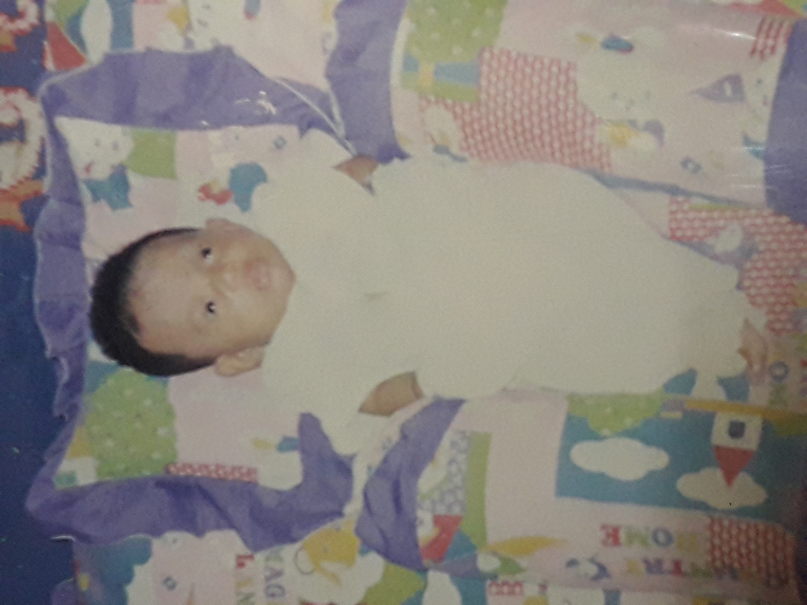

M Y L O V E L Y F A M I L Y |
||||
|---|---|---|---|---|
| A Y A H | M A K | K A K A K | A D E K | |
 |

| 
|  | |
| Name | Ibrahim bin Abdul Kader | Soleha binti Abdullah | Siti Nurfadhilah binti Ibrahim | Siti Nuratiqah binti Ibrahim |
| Date of birth | 24 May 1961 | 03 January 1961 | 27 July 2000 | 28 October 2001 |
| Date of birth (H) | 9 Dhul Hijjah 1380 | 15 Rajab 1380 | 25 Rabbi'ul Thani 1421 | 11 Sha'ban 1422 |
| Age | - | 60 | 20 | 19 |
| Place of birth | Malacca - 04 | Penang - 07 | Penang - 07 | Penang - 07 |
| Nationality | Malaysian | Malaysian | Malaysian | Malaysian |
| Race | Indian Muslim | Malay | Malay | Malay |
| Parent's name | Shaikh Abdul Kader bin Mamna Merican
_________ & Milah bte. Rahman |
Abdullah bin Haji Saad bin Haji Sahak bin Haji Sadak
Che Mah binti Saud & Zainab binti Hussain |
Ibrahim bin Abdul Kader
Soleha binti Abdullah |
Ibrahim bin Abdul Kader
Soleha binti Abdullah |
| Sibling's name | Hamidah Bee
Calsom Bee ... 5+ more Ibrahim Ismail |
Mariam
Hafsah Sofiah Azizah Salmah Azmi |
Siti Nurfaizah
Siti Nurfadhilah Siti Nuratiqah |
Siti Nurfaizah
Siti Nurfadhilah Siti Nuratiqah |
| Family memo | Ayah big family + stepmothers | Wan - true family & adopted family | Small happy family | Small happy family |
| Occupation | - | Retiree | Student | Dropship |
| Favourite food | Nasi Kandar | Makanan Kampung | Bihun sup + Masakan mak | Nasi Ayam + Masakan mak |
| Favourite drink | Kopi O (gula 1 camca) | Teh O ais limau | Jus Epal Laici | Teh Ais |
M Y L O V E L Y F A M I L Y |
||||